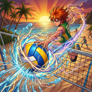

サポート / Super-Spike

Super-Spike についてSuper-Spike: Ultimate League は、iPhone・iPad向けの、スピーディーでド派手な2対2のビーチバレーゲームです。レシーブ、トス、スパイクをひとつひとつタイミングよく決め、映画のような必殺技を解き放ち、6つのビーチを舞台に Ultimate League を勝ち上がりましょう。サンセット・コーブと4人の選手は無料。小さな買い切りの購入で、コートや選手を追加できます。広告もサブスクリプションもありません。
App Store で近日公開
ボールを拾い損ねた？それとも何かおかしい？
ここにチケットシステムはありません。開発者ひとりと、本物のメール受信箱だけです。まずは以下をお試しください。それでも解決しないときの連絡方法もご案内します。
遊び方
光るリングが、ボールの向かう先を示します。リングが閉じる瞬間に押して、レシーブ、トス、スパイクを決めましょう。タイミングが合うほどタッチの質が上がり、「パーフェクト」のタッチなら、ボールは唸りを上げてネットを越えていきます。サーブは、サーブの種類を選んでボールをトスし、最高点で打ちます。
いいタッチを決めるたびに、必殺技ゲージが溜まっていきます。満タンになったら、選手の必殺スパイクを解き放ちましょう。ライバルが必殺技を放ってきたときは、ゲージが溜まっていれば「カウンター」で応戦できます。
はじめて遊ぶ方は、ガイド付きのチュートリアルで、すべてのボタンをステップごとに学べます。アーケードレッスンでは、移動、選手のチェンジ、ソフトショットを学べます。どちらも「オプション」からいつでももう一度プレイできます。
遊び方のスタイル
- ベーシック — レシーブとスパイクはあなたが担当し、トスはパートナーが上げてくれます。
- ベーシックデュオ — レシーブ、トス、スパイク。すべてのタッチを自分ひとりでこなします。
- アーケード — 砂浜を自由に走り回り、好きなときに選手をチェンジし、スパイクを狙い打ち、ネット際でブロック。フェイント、ツー、フリーボールといったソフトショットも使えます。
試合の種類：
- Ultimate League — コートでフルマッチに勝つと、次のコートが開放されます。トロフィーまで勝ち進みましょう。
- クイックマッチ — 開放済みのどのコートでも遊べる、短めの試合です。
- 練習 — 役立つヒントを見ながらプレイできます。
- 観戦 — コンピューターが両チームを操る試合を、のんびり眺められます。
難易度は「やさしい」から「伝説級」までの4段階です。
購入
サンセット・コーブと4人の選手（Kai、Mila、Sol、Nova）は無料です。それ以外はすべて任意の買い切りで、サブスクリプションも広告もありません。
- コート — セーヌ河畔、Copa Sol、サハラの浜辺、リップタイド・テンペスト、オーロラ・フィヨルド
- 選手 — Zane Okafor、Rex Malone、Luna Ito、Dre Okoye、Isla Moreau、Bruno Vega、Coral Kahale（それぞれ固有の必殺技つき）
- コートパック — 全5コート
- 選手パック — 全7選手
- アルティメットセット — 全5コートと全7選手
選手は購入後すぐにプレイできます。コートはリーグに加わり、順番に開放されます。ひとつ前のコートでフルマッチに勝つと（難易度は問いません）、次のコートが開放されます。
購入の処理は Apple が行います。新しい端末やリセットした端末で購入を取り戻すには、ストア画面または「オプション」の一番下にある「購入を復元」をタップしてください。
オプション
- 言語 — 英語、フランス語、イタリア語、ドイツ語、スペイン語、ポルトガル語（ブラジル）、日本語、韓国語、繁体字中国語、簡体字中国語から選べます。変わるのはゲーム内の言語だけで、デバイスの言語は変わりません。
- BGM・効果音・振動 — それぞれオン／オフできます。サウンドは端末の消音モードに従います。ゲームコントローラ使用時は、端末の代わりにコントローラが振動します。
- グラフィック — 3段階から選べます。古い端末でバッテリーを長持ちさせたいときは、低めの設定を選んでください。
- 操作 — 左利き用ボタン、スティック感度、タイミング調整（約15秒）、タッチとコントローラそれぞれのタイミングのリセット。
- チュートリアル — チュートリアルやアーケードレッスンをもう一度プレイできます。
- クレジット — BGMは Gemini で、効果音は ChatGPT で制作されています。
コントローラで遊ぶ
PlayStation、Xbox、Nintendo、MFi の各コントローラに対応し、画面にはお使いのコントローラのボタン記号がそのまま表示されます。端末の「設定 ▸ Bluetooth」でペアリングしてから、ゲームを開いてください。タッチとコントローラは、いつでも切り替えられます。
トラブルシューティング
メールを送る前に、次の手順を上から順にお試しください。ほとんどの問題は最初の2つで解決します。
- App Store で Super-Spike が最新バージョンになっているか確認する。
- アプリを完全に終了してから開き直す。
- 端末を再起動する。
- iOS／iPadOS が最新か、空き容量が残っているかを確認する。
不具合の報告
それでも直らない場合は、次の情報を添えてメールでお知らせください。
- 端末のモデル（例：iPhone 16、iPad Air）
- タッチとコントローラのどちらで遊んでいたか（コントローラの場合はその機種）
- コート、操作方法、難易度
- 期待していた動作と、実際に起きたこと
- 可能であれば、スクリーンショットか画面収録
よくある質問
購入したのに、ロックされたままです。
購入時と同じ Apple Account でサインインした状態で、「購入を復元」（ストア画面、または「オプション」の一番下）をタップしてください。復元に料金はかかりません。それでもロックされたままなら、アプリを完全に終了してから開き直してください。
コートを購入したのに、まだプレイできません。
それで正常です。コートはリーグの順番で開放されます。ひとつ前のコートでフルマッチに勝てば（難易度は問いません）、そのコートがすべてのモードで開放されます。
タイミングがずれている気がします。
ゲームはプレイしながらあなたのタイミングを学習します。タッチとコントローラでは別々に学習します。一から合わせ直したいときは、「オプション ▸ タイミング調整」を使ってください。約15秒で終わります。
インターネット接続は必要ですか？
いいえ。Super-Spike は完全オフラインで遊べます。アカウントもログインも不要です。（購入や購入の復元は App Store を通して行うため、その瞬間だけ通信が必要です。）
進行状況は保存されますか？
はい。進行状況と設定は端末内に保存されます。iCloud がオンなら、開放したコートと修了したチュートリアルも、あなた自身の iCloud アカウントを通じて、お持ちのほかの iPhone や iPad に引き継がれます。
横向きでないと遊べませんか？
いいえ。Super-Spike はどの向きでも遊べます。ただし、横向きにするとコートをいちばん広く見渡せます。
対応端末は？
iOS 18 以降の iPhone と iPad に対応しています。折りたたみ式 iPhone でも、閉じても開いても遊べます。
機能や新しい選手のリクエストはできますか？
もちろんです。メールでお送りください。小さくて具体的な提案ほど、実現しやすくなります。
それでも解決しないときは
いつでもご連絡ください。すべてのメールに自分で目を通し、できるだけ早くお返事します。
お問い合わせ
akavjahcreations@gmail.com郵送先住所
Akavjah Creations
PO Box 220300
Chantilly, VA 20153
United States